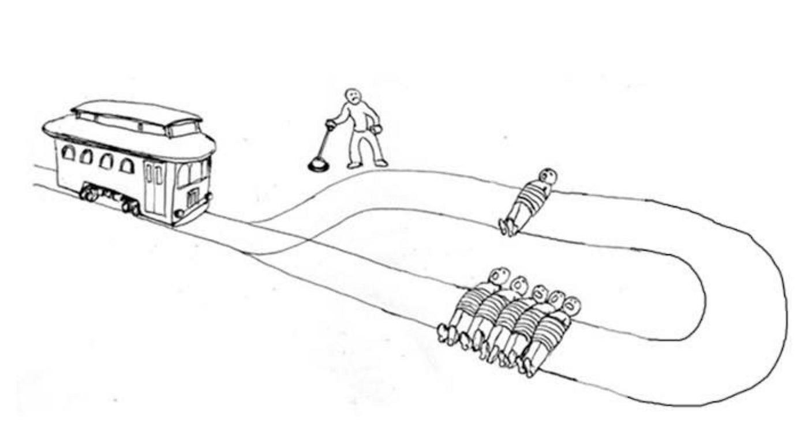

Welcome to the first ethics course! It's time for me to get serious and write monologues about modern-day society and its inherit problems.
Everyone has their own ethical opinions; they view the world through their own ethical glasses. Whether that means you only care about yourself and all the decisions you make should benefit you the most, or you try to be empathic with others, it's all up to you. That's why I want to preface that everything you read here is subjective. Some people are very susceptible to other people's opinions, so if you are easily influenced, please don't read this course. If you're confident about your ethical stance, go right ahead.
Everyone has to make choices. You can choose a type of milk at the grocery store, choose which expensive car to buy, or choose that special person you want to spend the rest of your life with. In all of these cases, your mind is utilizing the same systems: your ethics. In the case of milk at the grocery store, you most likely won't think too long about it, but deep down you're processing information and outputting a choice based on multiple factors that define your ethical view. In the other two examples you are actively thinking about your choice. Instead of letting your mind do the thinking, you're actively following every step of the process through eliminating options, weighing pros and cons, and much more.
Our ethics define the way we choose. They define how we think about and communicate with others on a daily basis. They define if we're lazy or always keen to get stuff done right away. This is why I believe it is important that everyone actively thinks about their ethical opinions. When you have time to make a choice, try to think about why you're making that specific choice and what worths/beliefs matter to you in that situation.
Your ethical view is shaped by a multitude of factors:
All of these play an important role in forming your ethical view. This is especially important in your early years (0-25y), because that's when your brain is still developing. Your ethical opinions are like clay. At the start, they're easy to mold; a child is easily influenced, which is why monitoring what content they consume is of utmost importance. As you get older, that clay begins to harden. Your ethical opinions are beginning to be set in stone. You're less easily influenced, and you start defending your opinions, believing they are correct.
At the end of the day, the most important factors are definitely your genetics and your surroundings. Your genetics define your gender, interests, and intelligence. Your surroundings include where you grow up, your friends and family, your cultural background, the media you consume, your economic situation (poor <> rich), etc.
Your will to think about your ethical opinions is exactly what shapes them.
When making tough decisions, people tend to run into common misconceptions that result in bad choices.
Imagine you're at a car dealership in 2023, looking to buy a brand new car. You're hesitating between 3 options.
In this situation, most people only think about themselves, and not about the influence their decision has on others. While it may seem like you buying one car does not affect any of the other 8 billion humans, you couldn't be farther from the truth. Furthermore, if everyone thought this way, we'd be completely doomed.
You buying a car has an impact on the economy, the people around you, and the climate (which affects all of us). People who only think about themselves when forming an opinion here would choose the car that best fits their needs. If you're a rich person, you would definitely go for car C, because you can afford it and it's brand new. If you're poor, you would definitely go for car A, because it's the cheapest option. You could also be in the middle class and pick car B. Not only the price would play a significant role here, but also the condition of the car. That's important to you.
If you expand your scope of people, car C would be a terrible decision. Not only are you buying a car that is noisy, dangerous, and (subjectively) ugly, but you're also fueling the economy behind monopolistic expensive car companies, plus this car is a hybrid, which is a fancy way of saying 'not quite electric, still bad for the environment'.
If you choose car A, you're already on the right track. Yes, this car is the worst in terms of impact on the climate, but you're buying a normal car that doesn't bother others, it's completely fine to drive, and you're stimulating the resale of cars. Instead of always buying new cars, you're recycling and buying old cars that still work, to maximize the power and materials put into them - which balances out the negative effects on the climate.
In this scenario, buying car B is probably optimal. You're also motivating the resale of cars, your car is electric and great for the environment, and it doesn't bother others.
A second mistake people tend to make here is only thinking about contemporaneity (about "now"). In the case of most decisions you make, thinking about their effect in the long-run, in the future, is critical. If you only think about the effects of your decision today or for the next month, you're doing it wrong. Making decisions that positively impact people for a long time is the best way to go about things.
Many of the points I brought up about your scope of people also apply here, especially climate change. Climate change is a long-term process, so it's important to think ahead and care about future generations.
Choosing car C is once again the worst decision you could make. Buying new cars and letting old ones, manufactured from precious materials, go to waste, is a desastrous idea. Yes, it's a hybrid, but as I said: that just sounds like you're too lazy to buy an electric car.
Car A is bad for the environment because of its usage of gas (Co2 emissions), but you're recycling, which is positive for the climate.
Car B is electric, so it will have the most positive effect in the long run.
What exactly is happiness? If you're utilitarian - which I partially am -, it's this:
Where the x-axis represents time and the y-axis represents fun/pleasure. The area under the graph (the integral) is the amount of happiness you experience - in this case, it's 16.67... uh... Happiness Points?
Happiness is the result of fun and/or pleasure. If you're having fun, you'll earn happiness. The fun doesn't last forever, it's over once the laughing with your friends or riding a coaster is over. The happiness, however, stays. It's like a variable linked to you that can increase or decrease. If you're having fun, it increases, if you're not having fun, it decreases. The amount by which it increases/decreases highly depends on how susceptible you are to happiness. Some people don't need a lot to become happy, while others require miracles to take place before a grin can appear on their face.
Let's use this knowledge to tackle one of the most famous ethical problems/dilemmas: the trolley problem.
Oh no! A trolley is heading towards 5 people tied to a track. You can push the lever to divert it to the other track, where it will run over 1 person instead. What will you do?
If you push the lever, one person will be killed instead of five people. Here we run into our first unsolvable dilemma. You see, the trolley problem is fundamentally unsolvable, because it relies on unknown factors. Who are these people? Are they all the same age? Are some of them more important to society? Are there children involved? Do they have families? This is where we add our first assumption to the problem: "All people involved in the problem are equal."
I don't mean to say that some people are worth more than others. I mean that in our assumption, it's 6 of the same person. This eliminates problems concerning their individual situations.
You are killing 1 person instead of 5, a great decision in terms of happiness decrease over death. Less people will be sad, because less people are killed - remember that these people are equal, also in the amount of relatives they each have.
On the other hand, you did just actively parttake in murder. You pushed the lever, and pretty much killed a man. That will negatively affect your happiness when you're in prison, but also that of your relatives (unless they're sadistic and like to see you suffer).
If you don't push the lever, 5 people are killed instead of what could have been a single one. On the other hand, you aren't responsible for what has happened. You were a bystander. You will not face justice.
If you push the lever, 2 people and their relatives face direct negative consequences: you and the one person you technically murdered. If you don't push the lever, 5 people and their relatives face direct negative consequences. In any ethical situation, it's important to value yourself equal to everyone else, which can be difficult for many. After all, humans want to survive, so they will always value themselves slightly above others.
In an ideal situation you would push the lever, since less people face negative consequences. However, there are a multitude of problems here I didn't discuss and won't get into.
In conclusion, the trolley problem is difficult because it is fundamentally flawed and we lack necessary information.
Thank you for coming to my TED-talk.